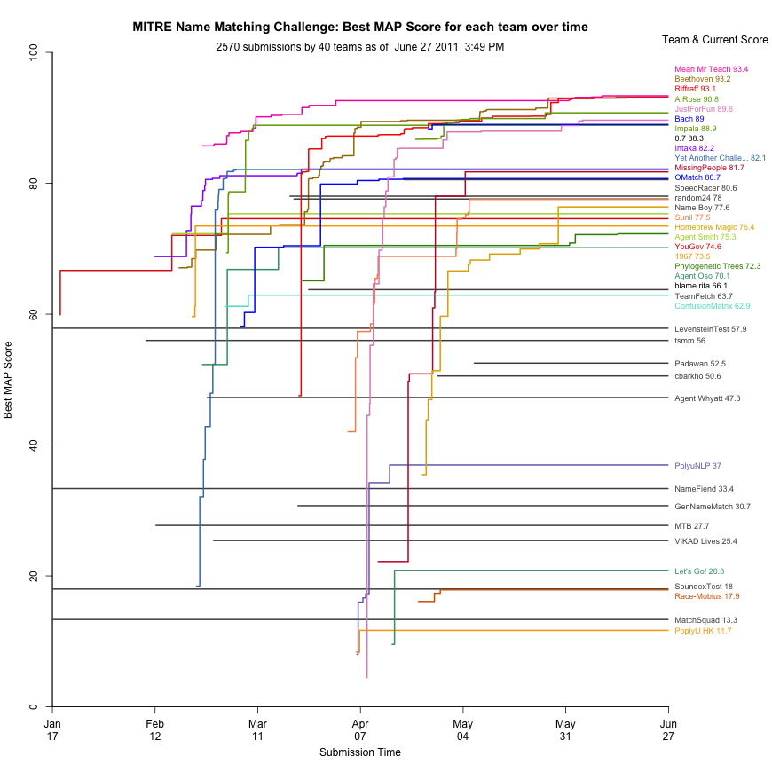
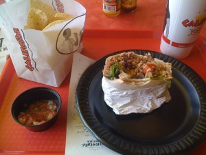
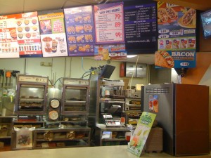
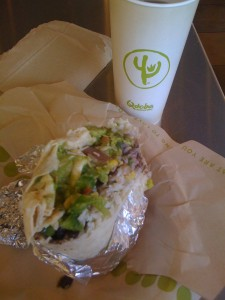
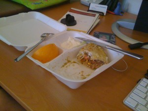
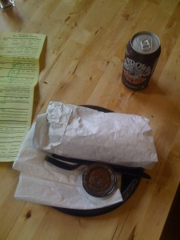
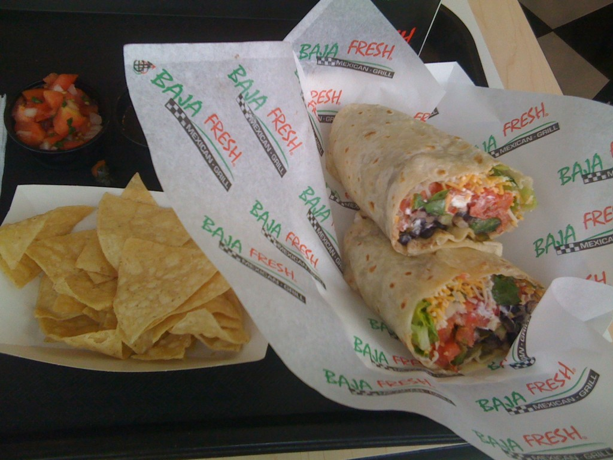

Posted: February 23rd, 2011 | Author: chmullig | Filed under: Nerdery | Tags: graph, matching, mitre, python, r | 13 Comments »
For my own curiosity I created a python + R script to grab the MITRE leaderboard and graph it. It’s a bit of python to grab the leaderboard and write out some CSVs. Then a bit of R code (updated link: http://a.libpa.st/4KFGq) generates the graph. It’s running automatically with launchd on my laptop, and it should be regularly uploading a png to the address below. Launchd is pretty awesome, but a royal pain in the ass to get set up. It doesn’t feel very deterministic.
I still need to figure out how to jitter the names so they don’t overlap (like YouGov & Agent Smith), but other than that I thought it was a nifty little exercise.

Each line is a team, with their best MAP scores as datapoints
Posted: February 17th, 2011 | Author: chmullig | Filed under: Nerdery | Tags: programming, python, work | No Comments »
My illustrious former colleague Ryan is now over at MITRE doing operations research and who knows what. He pointed me toward the MITRE Challenge.
The MITRE Challenge™ is an ongoing, open competition to encourage innovation in technologies of interest to the federal government. The current competition involves multicultural person name matching, a technology whose uses include vetting persons against a watchlist (for screening, credentialing, and other purposes) and merging or deduplication of records in databases. Person name matching can also be used to improve document searches, social network analysis, and other tasks in which the same person might be referred to by multiple versions or spellings of a name.
Basically they give you a small list of target names, and a ginormous list of candidate names, and for each target name you return up to 500 possible matches from the candidate name list. Currently the matching software we built at Polimetrix back in 2005-2007 is doing pretty well. It was designed for full voter records, but I broke out the name component by itself. The result is pretty awesome. Currently we’re ranked #1 at 72.038. Below us are a few teams, including Intaka at 68.801 and Beethoven at 58.501.
No Comments »
Posted: February 9th, 2011 | Author: chmullig | Filed under: Nerdery | Tags: programming, stackoverflow | 3 Comments »
Recently I’ve gotten a bit obsessed with stackoverflow.com. It’s a programming Q&A site. You can ask questions, you can answer and comment on them. However they have a sick twist – people vote on everything. They vote on your questions, answers, comments. You earn reputation points when your content is voted up, and you lose points when it’s voted down. You also earn badges, like gaming achievements.
They’ve recently started a whole bunch of related sites under the stackexchange brand. Same model and software, but with different subjects. So far there are already more than I care to count with only very spurious differentiation, but a few highlights include gaming, cooking, english, programming (as a profession), power users, sysadmin, linux, ubuntu, and a lot more.
Here’s my badge of honor. Right now I have 674 rep and 10 badges on Stackoverflow, and 261/4 on gaming (plus ~100 on a bunch of the other sites, just for signing up). That’s my profile image, which should update automatically!

It’s amazing how satisfying and competitive the Q&A system ends up. I find myself less and less interested in any other medium for asking or answering questions like the kind on Stackoverflow. It’s slow and there’s no rep, what’s the point?
3 Comments »
Posted: January 25th, 2011 | Author: chmullig | Filed under: Uncategorized | 4 Comments »
Check it out: 241543903.
4 Comments »
Posted: November 11th, 2010 | Author: chmullig | Filed under: Nerdery | Tags: challenge, programming, python, r | No Comments »
I’m a fan of puzzles, programming and learning, so I’ve always enjoyed The Python Challenges. Recently my coworkers Delia, Chris and I came up with the idea of doing some of those within the company to help ourselves and our coworkers become more familiar with Python and R (and to a lesser extent SQL and other languages).
The end result is the YG Challenge, where we’ll be posting a few problems a week in at least R & Python, then solving them. Week 1 is up, and we have some great ideas for the future. Intended for our coworkers, it’s public because why not! Feel free to take a stab at solving them, especially if you haven’t used either of those languages before.
No Comments »
Posted: September 30th, 2010 | Author: chmullig | Filed under: Burrito | Tags: burrito, burrito wednesday | No Comments »
I’ve been very, very bad about posting recent burrito wednesdays. Luckily I’ve still been doing it nearly every week (missed a few while traveling). I’m going to just post ’em here en masse and then hopefully get back on schedule.
Burrito Wednesday #9: Food Chain
Food Chain is a collaboration between some clever guy and a bunch of existing vendors to provide better food out of the carts. He preps it, and they sell it ala franchises. This is a cart down near 17th and Connecticut. They technically call it a wrap, and I don’t recall being especially impressed by it. The sauce was pretty good, but the rest was pretty meh. Not much too it, rice, beans and not a whole lot else. Overall maybe 2 stars?
The Food Chain cart I went to on M St
Burrito Wednesday #10: California Tortilla
Cal Tort is one of my favorites, especially after I won 52 free burritos. Unfortunately I didn’t give them a fair shake for Burrito Wednesday – going to an out of the way spot (College Park) at an off time (early on a quiet summer weekday). They weren’t there best, but still pretty tasty. I really dig the new No Meato Burrito with cheese. It has a nice sauce. One of the real highlights of CalTort is the impressive hot sauce selection – including Brian’s favorite Dave’s Insanity – which will burn you. Burn you good. Overall still one of the best ones – 3.5 stars? 4? I don’t even remember my scale anymore.
Delicious California Tortilla burrito. Huge and tasty.
I missed the next Burrito Wednesday because I was on vacation, and the best/only burrito place I could find was closed on Wednesdays. D’oh!
Burrito Wednesday #11: Sancho’s Taqueria
I was in Palo Alto that week, so I went out with a huge cohort of coworkers to Sancho’s Taqueria. Unfortunately I didn’t take any pics. However the burrito was delicious. Chris is a fan of of the no veggie, no meat one, but I found the veggies to be delectable. They also had some tasty sauces you could take away. Bravo! 4 stars?
Burrito Wednesday #12: Taco Bell
Why I did this, I don’t really know. It was close, and I didn’t have many other close options left. Still…. I got a single bean burrito. It was shockingly cheap ($0.99 maybe?), and shockingly bad. It tasted overwhelming of salt. It wasn’t very large, and was pretty pathetically bad. Ugh. 1 star, at best. I’m glad to confirm there’s a reason I avoid this place.
Being a combination Taco Bell/KFC is really not appealing to me at all. Ugh.
Burrito Wednesday #13: Qdoba
I wanted to like this place, since a few friends rave about it. However I was quite disappointed. One point in there favor was that I had been to the dentist that morning – so perhaps my mouth was extra sensitive? I didn’t notice anything at breakfast, but maybe this was different?
The staff was pretty rude. After I agreed to pay extra for veggies they only put a small scooping on. I asked for more, and they were annoyed. I think a manager saw I was peeved and stepped in, which definitely improved the situation. The burrito was large and moderately priced. Unfortunately I found the texture to be incredibly off putting. The peppers were slightly bitter and had a very odd and inconsistent crunch to them. The rice was occasionally pretty hard. In the end I couldn’t finish it, and left feeling pretty disappointed. Still much better than taco bell, and again perhaps another location/time would be better. Overall no more than 2 stars.
Qdoba looks tasty, don't it?
I missed the next 2 weeks due to being in Europe. I’m sure I could have gotten tasty burritos in Amsterdam at least, but I was more interested in trying the local cuisines.
Burrito Wednesday #14: Mixtec
Back in the US it was time for another Burrito Wednesday. I grabbed a bike and headed up to Adam’s Morgan for Mixtec. Somewhat unusually I ate it there. The burrito was quite large and pretty good. It had 2 sauces, plus some hot sauces they put on the side. The guac and pico de gallo on the plate were a nice compliment. My biggest complaint was that it was a ton of tortilla, especially toward the end. I ended up leaving a lot of tortilla on the plate, after removing the inners. Overall it was better than I expected – 3 stars?
As an aside, the bike rental worked really well. I think I’ll sign up for a $50 yearly membership and try it out.
Mixtec burrito and inside.
Posted: July 23rd, 2010 | Author: chmullig | Filed under: Burrito | Tags: burrito, burrito wednesday | No Comments »
El Tamarindo in "Adams Morgan"
Burrito Wednesday #8 – El Tamarindo
This is more like Casa Blanco in that it’s a sit down place with the carryout containers, rather than a wrapped lunch spot. I was expecting a pretty traditional burrito, but in some ways I think it was the most off the wall one I’ve had so far. I ordered the veggie, and it was pretty expensive at ~$12.
It was too large, with too much tortilla (it seriously seemed like an 18″ tortilla!) and not enough tomatillo sauce. Ended up being pretty dry. The contents were crazy and included cucumber, carrots, corn and more. They gave a giant mound of sour cream on the side, along with an orange wedge. Ok…. I like vegetables, even weird ones (I like Well Dressed and Cal Tort’s new burrito for example) but this one wasn’t doing it for me. I’ll say a 1 on the meaningless scale.
El Tamarindo Burrito, mid consumption
No Comments »
Posted: July 23rd, 2010 | Author: chmullig | Filed under: Burrito | Tags: burrito, burrito wednesday | No Comments »
Shady entrance to the Well Dressed Burrito. Coming out you need to carefully look both ways, reinforcing the speakeasy motif
Burrito Wednesday #7 – The Well Dressed Burrito
Here’s a good one. In the middle of an alley there’s a door for The Well Dressed Burrito. The whole thing is very shady and industrial looking, like you’re going into a speakeasy or murder den. But no! What awaits is a tasty, delicious burrito!
I came by here at the end of 5k lunch time run. Welcome relief, until I had to walk home half a mile holding my burrito with no bag (the great DC bag tax bit me here, only had a credit card so I couldn’t give them 5¢ for a bag).
The counter and kitchen. Looks clean enough, anyway.
They have a few options – I went for the veggie burrito with both black and pinto beans and spinach. I like to have it all, I guess. It comes out pretty large, with some nice salsa on the side. It had cooled off a fair bit by the time I got it home, but it was still good. If I wasn’t sweaty I would have eaten in the little dining room/office they have in the back there. Funky, but kinda lovable in its own way.
That burrito looks pretty well dressed to me, but a tux would really polish it off
It was large, and pretty good. The vegetable variety was spot on. I think the ingredients could have been distributed a bit better. Occasionally I’d run into a larger chunk of spinach or something. I’d rate it a 3 on the meaningless scale, and definitely go back.
No Comments »
Posted: July 23rd, 2010 | Author: chmullig | Filed under: Burrito | Tags: burrito, burrito wednesday, burrito weds | No Comments »

Baja Fresh at 20th and I
Burrito Wednesday #6 – Baja Fresh
Hit and run since this is a couple weeks late now, oops! My coworker Jaraco was headed here for the green salsa (being a New Mexico boy, that’s important for him I suppose) so I bumped it up the list and joined him.
I have mixed feelings about Baja Fresh. The ingredients are all fairly high quality, they build them well enough, but it doesn’t gel into a great experience for me. I think the biggest issue I have is that the cold ingredients like pico de gallo and sour cream really cool the whole thing down, so you don’t have the enjoyment of nice hot beans, rice and veggies. The variety of hot sauces and salsas definitely give bonus points, and it’s not too expensive.
Here's the tasty burrito
Overall I’d probably say it’s a 2 on my scale, good, but with some drawbacks.
No Comments »
Posted: July 5th, 2010 | Author: chmullig | Filed under: personal | Tags: bluelounge, desk, evaluation, impressions, office, review, space, studio desk, studiodesk, work | 7 Comments »
I’m starting to work from home full time now. In general I’m pleased, as the office isn’t an inspiring place at the moment. Unfortunately our apartment is small – 543 sqft according to the property office. We have one Ikea Jerker desk, but Marian’s been mostly using it, while I use the couch, coffee table and a side table. As I’ll be working full time, I’m reclaiming that desk. So, the search was on for a suitable addition. Unfortunately we have only one reasonable space option – along the same wall as the desk and TV where an ugly, never used chair sits.
If we move some furniture around we have about 49 inches of width to play with – not much. We took a look at various leaning desks, but rejected them because the space just didn’t make sense. Marian stumbled upon the StudioDesk by BlueLounge. It seemed intriguing and perfectly suited – she’s a laptop user in need of a small desk. Unfortunately it’s the only piece of furniture made by the company, and we couldn’t find a single independent review by anyone who had actually seen the desk in person. Was it cheap junk being sold for way too much? Would it hold up? Is it worth the money?

Well, it sure looks impressive in the product images.
Since nobody local seemed to carry it, I decided the only way to find out was to order the sucker and write a review. B&H offered it for a better price, with semi-reasonable shipping and most importantly, a 15 day return policy. I secretly ordered it at 11:49 AM on Monday, and Tuesday by 4 it had arrived. The shipping box was pretty banged up, and it was quite heavy.

It's here!
 Assembly was reasonably easy. The hardest part was getting it out of the box, while keeping everything in good enough condition to be returned in. The instructions were buried somewhere in the middle so I’d basically unpacked it first.
Assembly was reasonably easy. The hardest part was getting it out of the box, while keeping everything in good enough condition to be returned in. The instructions were buried somewhere in the middle so I’d basically unpacked it first.
To attach the legs, you pop off the bottom of the cable tray, and bolt the legs into a diagonal cross brace. Then you screw in the two bottom panels on the trays (the photo on the left is with the trays in place) with 12 screws. That’s almost all the assembly. Once it’s upright you drop the top slider element into the grooves, and slide it forward.

The bottom of the desk, with the panels removed but legs attached.

The underside of the desk, ready to be flipped upright.
I didn’t look into it the materials too carefully, but it seems to mostly be particle board/fiberboard/laminate. Certainly the cable area is, and I assume the desk surface is – except for the edging. The legs are mahogany, and the diagonals are plain plywood. The sliders on the desktop seemed like they might be solid wood, but I couldn’t exactly determine. It’s very heavy, 70lbs. It seemed fairly well built, but ours had a crack in one of the sidewalls of the cable area. It wasn’t tooooo bad, but if we decide to keep it I think we’ll get it replaced. It goes down the height of the side board, and along its length for maybe a foot.

Side long shot of the crack. You can see it along the left side.
Here’s a shot of the main desk top. You can see the various materials. Keep in mind that the desk is laying upside down here, so the highest part of the picture is actually the underside of the desk. You can also see the foam rubber that lines the inside of the slit along the back of the desk, to keep cables in place I assume.

This is the inside of the desktop slot. Note: the desk is laying upside down, so the top of the image is the underside of the desk.
Flipping it over was easy enough. The desktop part just sits down in the middle, and then slides forward. That means you can’t accidentally pull it too far forward, it won’t let you. Clever, that.

Right after adding the desktop and sliding it forward most of the way.

Here's the inside of the storage compartment, from one end to the other.
The fake leather isn’t very nice, IMO. I don’t object to the fakeness, but it wasn’t a nice feel and it was very think. For example, Ikea a pleather desk pad that I think is substantially better. It just sits on top of the slide desktop and sticks slightly over the edge of the seams. It didn’t really sit naturally there, and felt like it could slide off or something. I added the laptop, some speakers, etc. The storage compartment was already feeling a little crowded with just a couple of cables, so I was definitely worried about getting a half dozen USB devices and such in there.

Inside the storage compartment

Here we go - the basic completed setup.
So there you see it – the desk setup. It’s really not huge, and the blotter awkwardly divides the space. In the end, we’re going to be sending it back. It was $533, and really not much better than a $180 Galant. The compartment is clever, but not really clever enough. Some nice $20 alternatives would be nearly as workable for organizing. Hopefully these reviews and comments will help you decide whether it’s the right option for you. I’m sure some folks will love it.
7 Comments »


{kind=link}
{kind=link}
{kind=link}
{kind=link}
{kind=link}
{kind=link}
{kind=link}
{kind=link}
{kind=link}
{kind=link}
{kind=link}
{kind=link}
{kind=link}
{kind=link}
{kind=link}